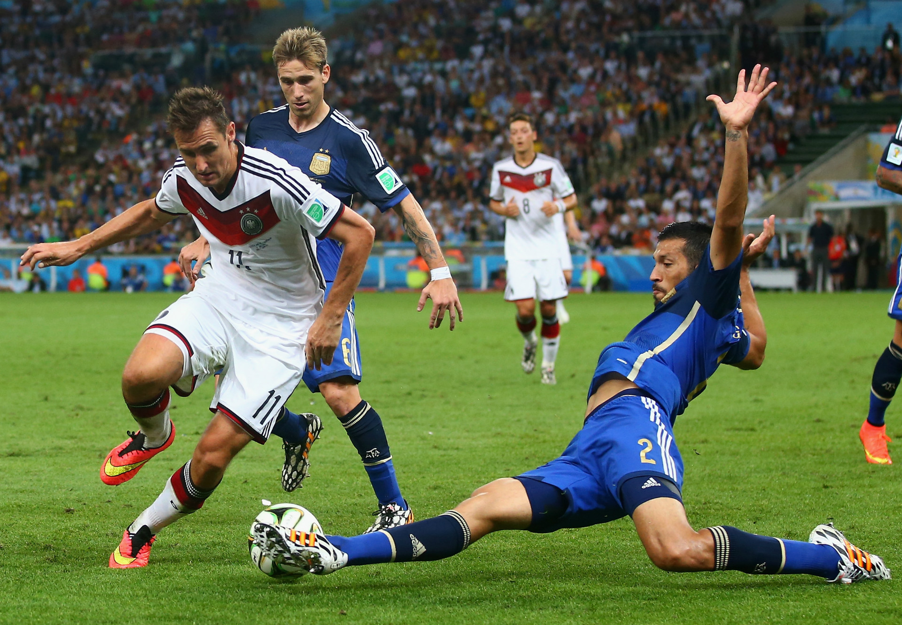

Лерой Зане высказался о своём будущем в мюнхенской «Баварии»
Вингер «Баварии» Лерой Зане заявил, что не часто задумывается о своём будущем в мюнхенском клубе, а также рассказал о ходе переговоров с руководством команды. «Моё будущее? Это зависит от нескольких факторов. Но сейчас я не думаю об этом слишком много. Впереди у нас важная игра [с «Арсеналом»], и я сосредоточен на ней. Я хочу, чтобы мы провели хорошую игру и начали двигаться в правильном направлении. Мы ведём переговоры с руководством клуба. Возможно, в ближайшие недели они станут более интенсивными», — приводит слова Зане Bayern & Germany в соцсети Х (ранее Twitter). В нынешнем сезоне 28-летний Зане провёл 37 матчей с учётом всех соревнований, забил девять голов и сделал 13 результативных передач. Действующий контракт игрока с «Баварией» рассчитан до лета 2025 года.
Коноплёв: Кержаков и Аршавин завоевали бы своё место в составе нынешнего «Зенита»
Главный тренер молодежной команды «Зенита» Константин Коноплёв ответил на вопрос, смогли бы воспитанники санкт-петербургского клуба прошлого поколения пробиться в нынешний состав команды. «Убеждён, что Кержаков, Аршавин, Быстров, Денисов завоевали бы своё место в составе. Наверное, себя только исключу из этого списка», — рассказал Коноплёв в эфире программы 8-16. В нынешнем сезоне в составе «Зенита» 14 легионеров: защитники – Нино, Дуглас Сантос, Марио Фернандес, Нуралы Алип, Родригао, Страхиня Эракович; полузащитники: Вильмар Барриос, Густаво Мантуан, Вендел, Клаудиньо, Педро и Артур; нападающие – Вильсон Изидор и Матео Кассьерра. После 23 туров «Зенит» лидирует в чемпионате России с 44 очками. Второе место занимает «Краснодар» (43 очка).
предыдущая следующая